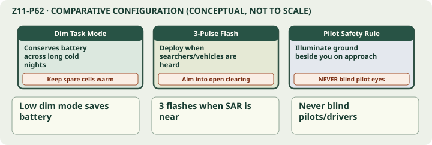

Z11-P62 · Navigation, weather and rescue · Adapted historical material
Use headlamps and strobe patterns cleanly for nighttime search signaling
Remain visible to night search teams while preserving essential task battery life across long dark hours.
When it applies · Nighttime waiting for search and rescue or guiding arriving ground responders to a camp or road pullout.
Equipment · LED headlamp or flashlight with spare cold-protected batteries and optional strobe mode.

Actions
- Conserve primary battery power during long quiet night hours—use low dim light for personal camp tasks and save high-beam sweeps or flashing bursts for when you hear vehicles, voices, whistles or approaching aircraft.[E02, C11, N09]
- Flash three deliberate light pulses (or activate a dedicated strobe mode) toward open sky or clearings when responders are nearby, avoiding shining bright beams directly into the eyes of approaching drivers or low helicopter pilots.[N09, E02, ED]
- Keep spare lithium or alkaline batteries warm inside an inner pocket so subfreezing air does not cut runtime in half before searchers arrive.[E02, E10]
Failure recognition · Leaving a headlamp blasting on maximum turbo mode continuously for four hours until batteries die completely right before ground rescuers enter the valley.[E02, C11]
Verify · Confirm working primary light, warm spare batteries and disciplined low-power conservation plan before sunset.[E02, C11, ED]
Stop or change course · Never shine blinding steady beams directly into helicopter windscreens during night approach—illuminate the ground clearing beside you instead.[N09, T01]
Evidence and editorial notes
- C11 · NPS · Ten Essentials (current web edition)
- Section: Fire and illumination · Conditions: Outdoor emergency kit
Support: Carry a dependable ignition option and protect it from moisture. Carry a separate light.
Limitations: Disposable butane lighters lose vapor pressure in freezing cold; matches fail when damp. · Conflicting evidence: None; supports redundant dry ignition kit planning.
Editorial note: Keeps lighting independent of fire-building. · Specialist reviewer: Field equipment and fire prevention
Primary source · checked 2026-11-24 - E02 · NPS · Ten Essentials (current web edition)
- Section: Navigation; insulation; emergency shelter; emergency food and water · Conditions: Outdoor trips; adjust kit to season and route
Support: Carry essential systems including navigation, insulation, light, water and emergency shelter.
Limitations: Carrying items without practice or cold-weather verification does not ensure readiness. · Conflicting evidence: None; baseline kit system architecture.
Editorial note: Supports failure-mode packing and kit verification cards. · Specialist reviewer: Field education and search and rescue
Primary source · checked 2026-11-24 - E10 · NWS · What To Do If You're Caught in a Winter Storm (current web edition)
- Section: Outside > Protect yourself from frostbite and hypothermia · Conditions: Outdoor winter storm
Support: Keep clothing dry and avoid overexertion. Wetness accelerates cooling.
Limitations: Cotton retains moisture and accelerates conductive and evaporative heat loss. · Conflicting evidence: None; reinforces moisture-management layering.
Editorial note: Links sweat management to overnight insulation integrity. · Specialist reviewer: Cold-weather shelter and wilderness medicine
Primary source · checked 2026-11-24 - N09 · NPS · Outdoor Emergency Plan (current web edition)
- Section: If You Get Lost; Seek help · Conditions: Lost hiker who cannot safely retrace steps and has sought rescue
Support: Report last known location and landmarks. Stay put while awaiting help unless an immediate threat requires getting to safety.
Limitations: Navigation, signaling method and safe movement depend on site and responder instructions. · Conflicting evidence: See A02 claim audit for boundaries.
Editorial note: Core evidence for lost-person psychology, signaling and SAR coordination cards. · Specialist reviewer: Search and rescue
Primary source · checked 2026-11-24 - T01 · American Red Cross · First Aid Steps (current web edition)
- Section: First Aid Steps > Check the scene; check the person · Conditions: Lay responder in United States; assess safety before contact
Support: Check scene safety, responsiveness, breathing and immediately life-threatening conditions.
Limitations: Lay guidance does not replace advanced clinical or rescue protocols. · Conflicting evidence: None; universal first-response opening gate.
Editorial note: Anchors scene-safety-first rule across Z01. · Specialist reviewer: EMS and wilderness medicine
Primary source · checked 2026-11-24
Source lineage · NPS Ten Essentials and B014-P16; new manuscript · Classification · Adapted historical material.